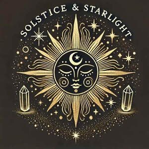

Trade Mark Journal No.2026/003 16 January 2026
UK00004316264 27 December 2025 (14)

- Class 14
- Gemstones; Semi-precious gemstones; Tanzanite being gemstones; Tourmaline gemstones; Artificial gemstones; Gemstones, pearls and precious metals, and imitations thereof; Jewellery in semi-precious metals; Chalcedony used as gems; Semi-precious stones; Jewellery stones; Precious and semi-precious gems; Jewellery fashioned of semi-precious stones; Precious and semi-precious stones; Agate as jewellery; Pearls [jewelry]; Cuff links of precious metals with semi-precious stones; Cabochons; Jewellery being articles of precious stones; Articles of jewellery with precious stones; Artificial stones [precious or semi-precious]; Pearls [jewellery]; Jade [jewellery]; Cuff links made of precious metals with semi-precious stones; Jewellery incorporating precious stones; Opals; Articles of jewellery with ornamental stones; Emeralds; Natural gem stones; Jewellery in precious metals; Jewellery of precious metals; Ornaments, made of or coated with precious or semi-precious metals or stones, or imitations thereof; Jewellery made of semi-precious materials; Jewellery made of precious stones; Pearls [jewellery, jewelry (Am.)]; Jewellery in non-precious metals; Olivine [gems]; Semi-precious articles of bijouterie; Statues and figurines, made of or coated with precious or semi-precious metals or stones, or imitations thereof; Gems; Synthetic precious stones; Topaz; Cabochons for making jewellery; Charms [jewellery] of common metals; Presentation boxes for gemstones; Statuettes made of semi-precious stones; Jewellery being articles of precious metals; Statuettes made of semi-precious metals; Jewellery coated with precious metals; Jewellery plated with precious metals; Pendants [jewelry]; Jewelry charms in precious metals or coated therewith; Amber pendants being jewellery; Jewelry boxes of precious metals; Jewellery made of crystal coated with precious metals; Platinum jewelry; Semi-finished articles of precious stones for use in the manufacture of jewellery; Jewellery incorporating pearls; Gold jewellery; Jewellery boxes of precious metals; Pendants [jewellery]; Jewellery fashioned of precious metals; Amulets [jewellery]; Jewelry; Figurines of precious stones; Jewellery made of precious metals; Necklaces [jewelry]; Jewellery fashioned from non-precious metals; Jewellery chain of precious metal for necklaces; Necklaces [jewellery]; Chains made of precious metals [jewellery]; Precious jewellery; Jewels; Jewelry charms; Articles of jewellery made of precious metals; Gold necklaces; Jewellery chain of precious metal for bracelets; Jewellery made of plated precious metals; Figurines for ornamental purposes of precious stones; Gold earrings; Plastic bracelets in the nature of jewelry; Charms [jewellery]; Charms for jewellery; Charms [jewellery, jewelry (Am.)]; Earrings of precious metal; Bracelets [jewellery, jewelry (Am.)]; Jewelry cases of precious metal; Jewel pendants; Jewellery chain of precious metal for anklets; Jewelry caskets of precious metal.
Heidi Elizabeth Johnson